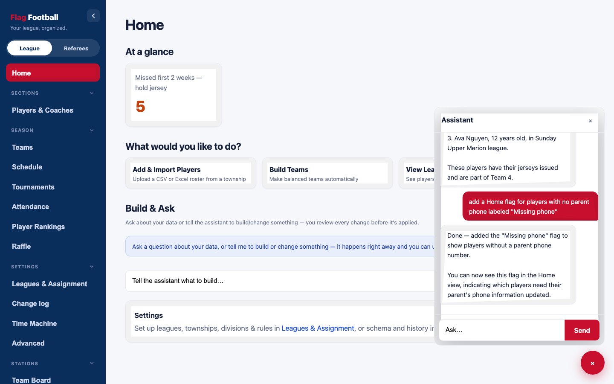
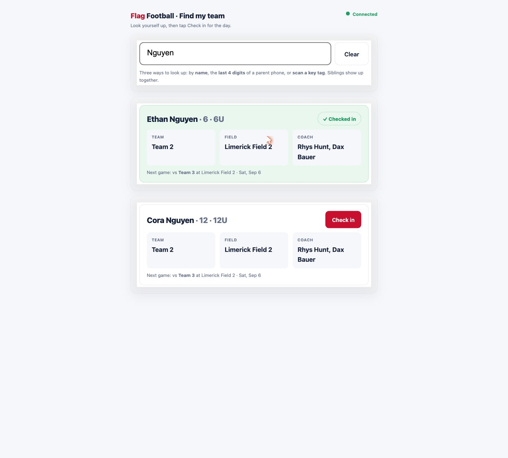
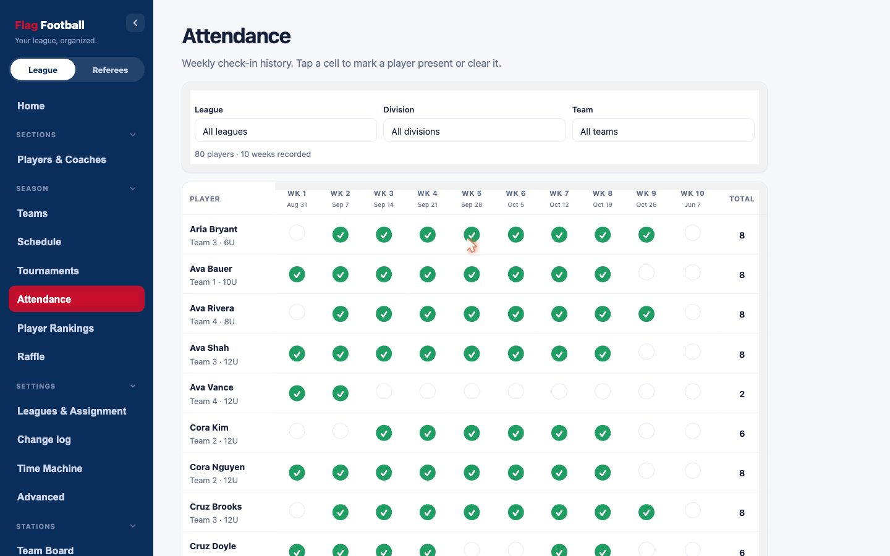
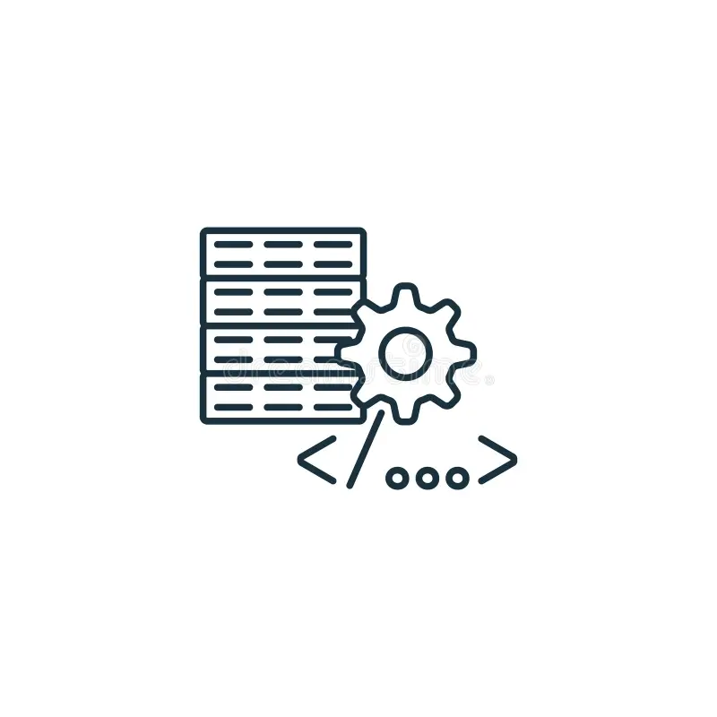
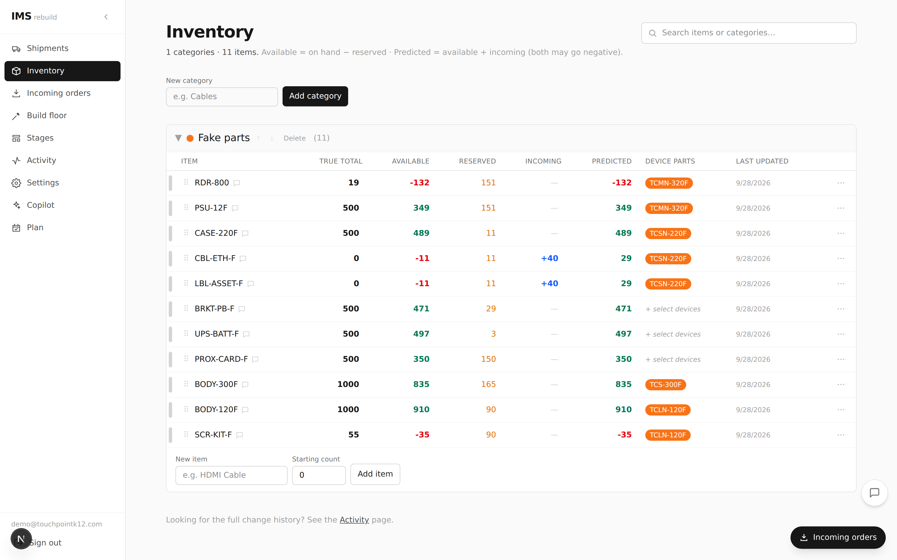
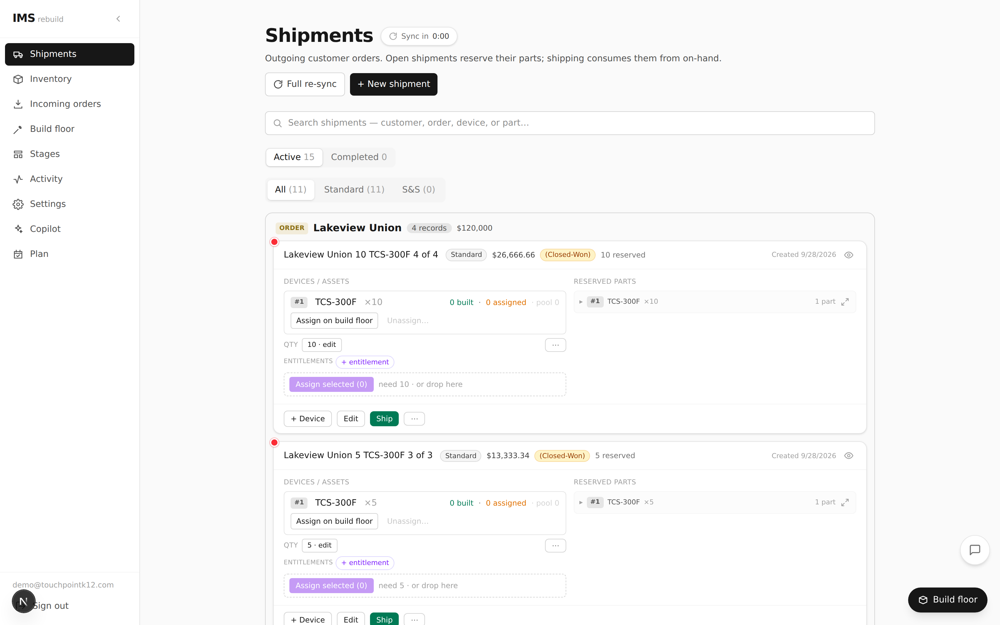
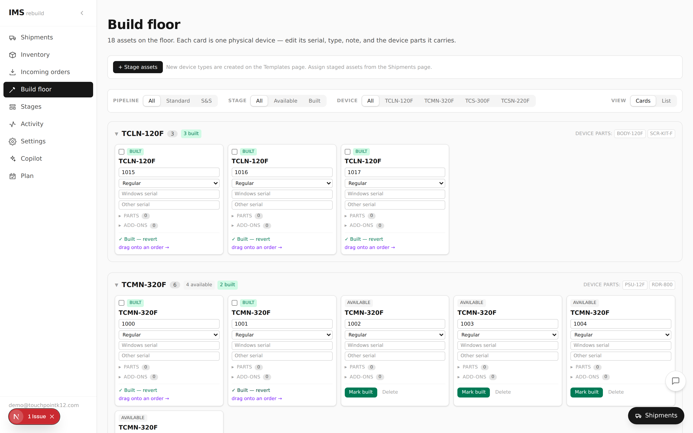
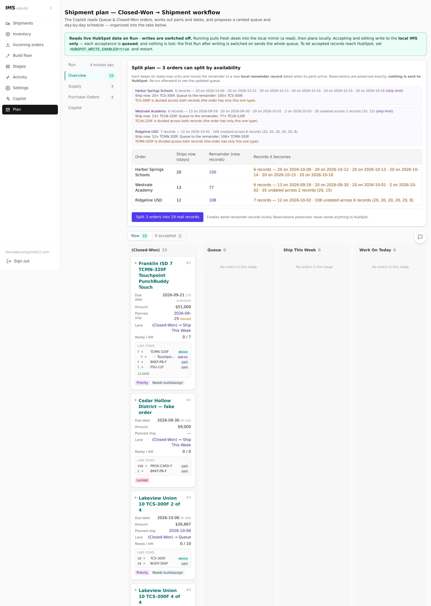

B.S. Computer Science, Mathematics Minor | Honors Program
May 2026
GPA: 3.8 | Presidential Scholar | Dean's List
AI Software Developer / Software Development Contractor
IT Intern
Languages: Python, Java, SQL, R
Technologies: Git, REST APIs, .NET, MySQL, SQLite, PowerShell
Areas: Artificial Intelligence, Machine Learning, Data Science, Software Engineering, Databases, Algorithms, Computer Systems
Algorithms & Data Structures, Analysis of Algorithms, Artificial Intelligence, Machine Learning, Data Science, Database Systems, Software Engineering, Computer Systems, Linear Algebra, Statistical Methods, Theory of Computation



Built a private youth flag-football league management application using Next.js, SQLite, and a local AI model. The system manages players, coaches, team building, scheduling, tournaments, attendance, rankings, and league rules.
Created a self-hosted AI assistant that can be integrated into Next.js applications as a chat widget. It can interact with application data, UI, databases, schemas, and code while requiring approval for consequential changes such as database writes and code edits.
Technologies: Python, Next.js, JavaScript, SQLite, SQL, APIs, Machine Learning
Worked on software and backend systems supporting SmartClock hardware and time-and-attendance solutions used by school districts. The project involved connecting hardware, databases, APIs, and business applications into a reliable software system.
Contributed to backend development, database design, permissions, API development, and data-driven software features. The work provided experience developing software that interacts with real-world hardware and business requirements.
Technologies: JavaScript, SQL, SQLite, APIs, Databases, Backend Development





Developed a full-stack inventory management system that tracks parts, devices, orders, and shipments from HubSpot deals through staging, building, and shipping. Built with Next.js, Electron, and SQLite, with integrations for HubSpot and Slack.
Developed an AI-powered assistant for IMS that analyzes inventory and orders, provides recommendations, and helps users complete tasks such as staging, assigning, building, and shipping. The Copilot uses a human-approval workflow so AI actions remain controlled and reversible.
Technologies: Next.js, Electron, SQLite, HubSpot, Slack
Completed a variety of software development and computer science projects through coursework at Villanova University. Projects have covered algorithms, data structures, databases, software engineering, computer systems, artificial intelligence, and programming languages.
These projects provided experience designing solutions, implementing algorithms, debugging software, working with databases, and applying theoretical computer science concepts to practical problems.
Technologies: Python, Java, C++, C#, C, SQL, R, Git
I’m a Computer Science student at Villanova University with a strong interest in software development, artificial intelligence, and data-driven technology. Outside of academics, basketball has been a major part of my college experience. I joined the Villanova men’s basketball program as a manager before becoming a practice player and eventually earning a spot on the roster. Balancing basketball and Computer Science has taught me discipline, teamwork, time management, and how to perform under pressure, while also pushing me to grow both personally and professionally.
The quickest way to reach me is email.